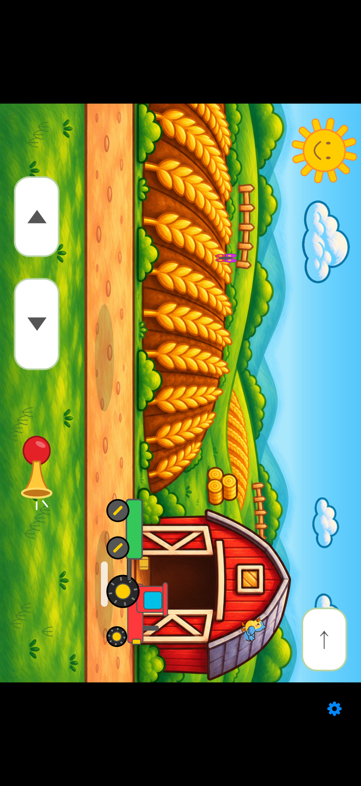
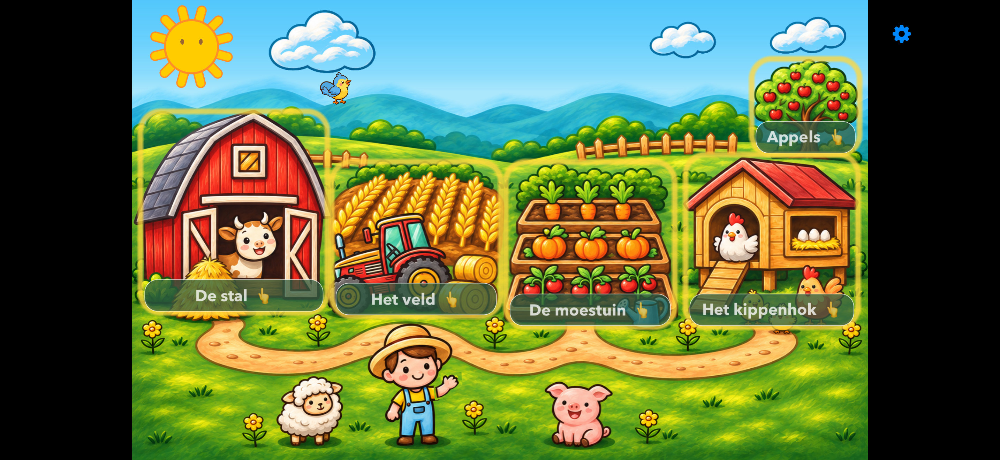
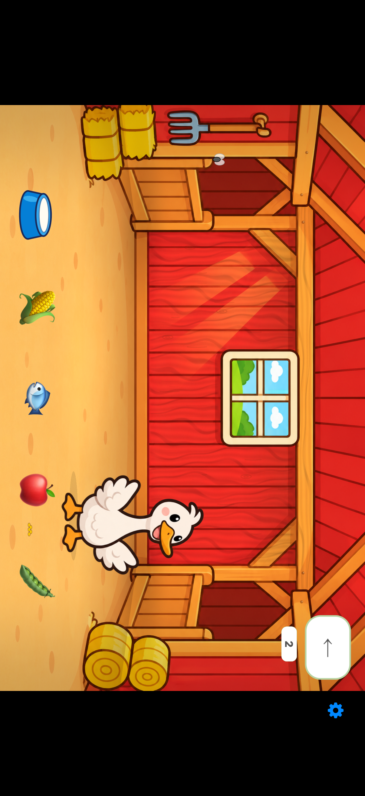
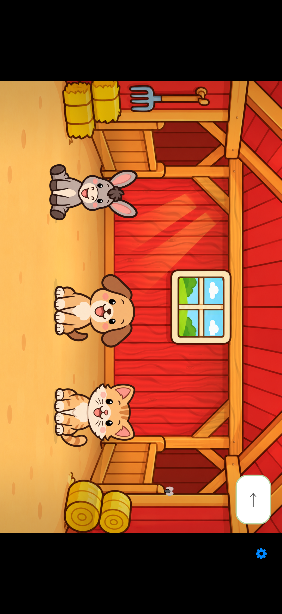
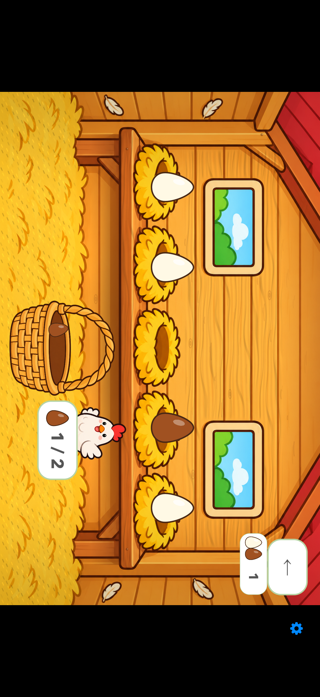

Met de tractor
Rijd over het veld en breng de hooibalen naar de schuur.
Voor 3–5 jaar · iPhone en iPad
Rijd met de tractor, voer de dieren en vang appels. Ontdek zeven boerderijspelletjes met Nederlandse stemmen.
Bekijk de spelbeelden

Rijd over het veld en breng de hooibalen naar de schuur.

Kies wat elk dier graag eet.

Gebruik een spons, borstel of douche om de dieren te verzorgen.

Luister naar het geluid en tik op het dier dat erbij hoort.

Plant zaadjes, geef water en oogst je groenten.

Verzamel witte of bruine eieren en hoor ze hardop tellen.

Schuif de mand onder de vallende appels en geef de boom water.
Bekijk hoe de spelletjes eruitzien in een bewegend speloverzicht.
Open het speloverzicht (GIF)Alle spellen zijn meteen beschikbaar. Nederlandse gesproken aanwijzingen helpen je kind op weg.
De spellen werken offline en bevatten geen advertenties, accounts, abonnementen of in-app aankopen.
Stel stemmen, speleffecten en achtergrondgeluiden apart in via het oudergedeelte.
De app bewaart geluidsvoorkeuren en voortgang van enkele spellen lokaal.